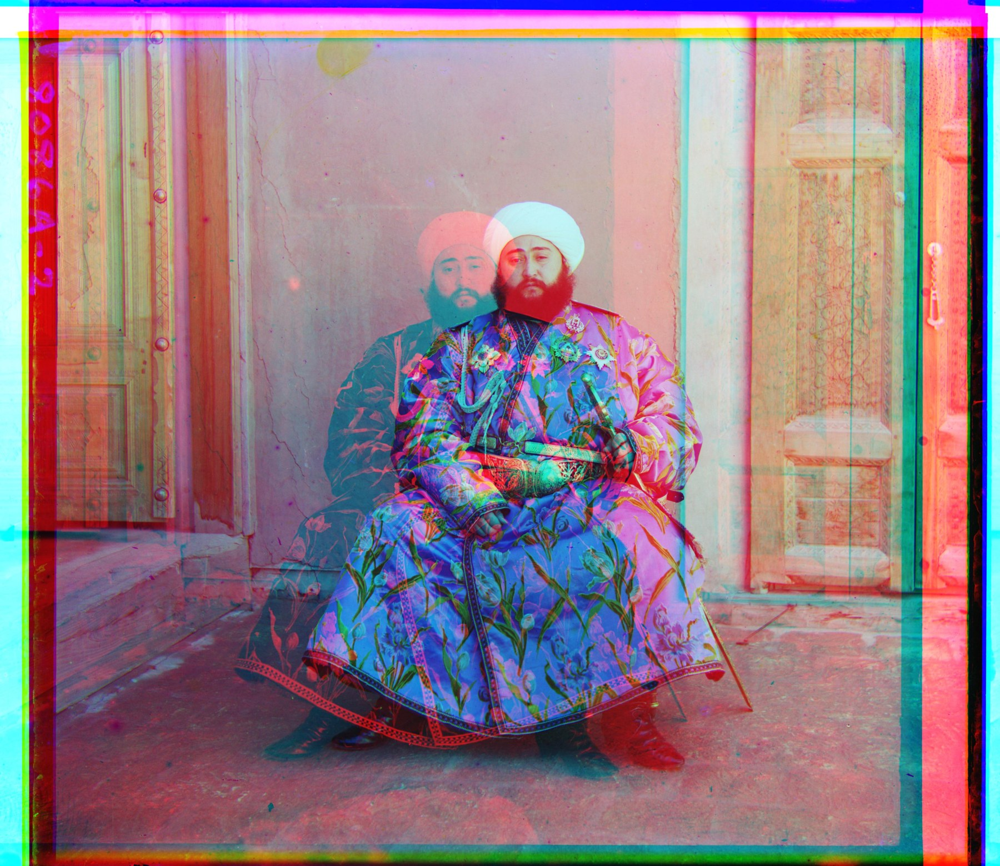
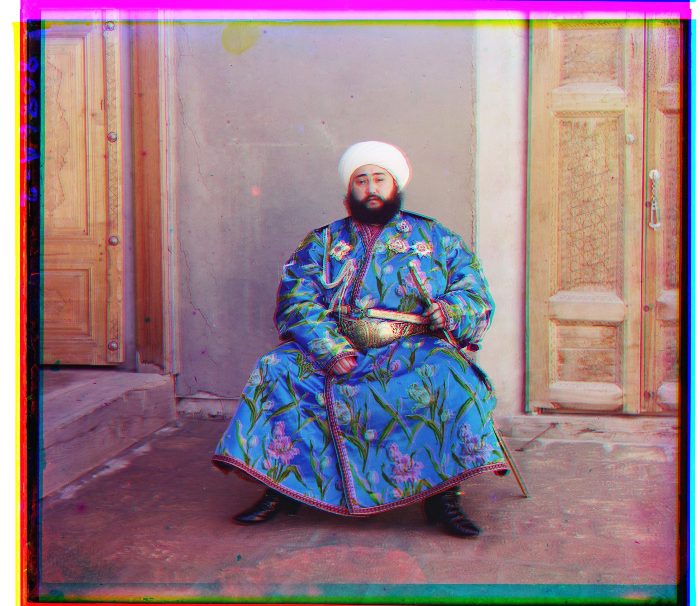

Overview
For this assignment, we are talking Prokudin-Gorskii shots, where each scene is taken 3 times through a blue, green and red filter. The task is to automate the stacking of these 3 exposures top to bottom. Below are the 14 provided images, including one that struggles to align at first, and what I did to resolve it. The gist of it: We use a color layer as the reference, then we "overlay" the other color layer ontop and sweep through the entire image using a scoring function. From there we take the highest scoring function as the offset needed for the top color layer.
Approach
Comparing interior scores
Before going indepth about the searching algorithms, I would like to explain on the scoring functions and how we try to mitigate issues. In the images, there are black borders that separate the colored layers from the background as well as other color layers. If we were to use the scoring function on the image layers as is, the black borders will throw off the scores (as black contains all three colors, any pixel with high color intensity would find it's score better with these black borders pixels).
To deal with this, before passing each color layer matrix into the scoring function, we "punch-in" the image by 80%,
leaving the 10% out from the top, left, bottom, right of the matrix/image. This doubles it's use as when we apply
np.roll, the top sections are rolled over to the bottom, the left sections are rolled over to the right, etc.
By cropping in the matrix, we don't have to account for these roll-over sections in our scoring.
Single scale search
For the low resolution images, we can afford to just try every offset there is. The blue layer stays put as the reference, and we shift the moving layer from -15px to +15px in both directions, which gives us 31 x 31, or 961 offsets to go through. At each one we run the scoring function on the punched-in matrices from above, and keep track of whichever offset came out highest. At the end, we apply that offset to the moving layer.
I implemented both the Normalized Cross Correlation (NCC) and Sum of Squared Differences (SSD) scoring functions, and kept NCC as the default as it didn't matter much here with 2 of the 3 pictures agreeing on the same offest. Where they do disagree later on ("emir"), it turns out the scoring function matters a lot less than what we are feeding into it.
for dy in range(-radius, radius + 1):
for dx in range(-radius, radius + 1):
shifted = np.roll(moving, (dy, dx), axis=(0, 1))
current = score(interior(shifted), interior(reference))
if current > best_score:
best_score, best_shift = current, (dy, dx)Pyramid search
The .tif scans are a lot bigger, around 3200 x 3700 per color layer, and the true offsets are much larger. Trying every offset at that size is just infeasible.
What we do instead is build an image pyramid. We shrink the image by half over and over, so a huge offset turns into a smaller offset that the small search can actually reach. The catch is that we cannot just drop every other row and column, as that causes aliasing (the fine details get mistaken for coarse ones) and the small images stop looking like each other. So we blur with a Gaussian first, then subsample. I wrote the Gaussian kernel and the convolution myself off a 1-D kernel instead of calling a library resize, since the handout asks for the pyramid to be from scratch. We keep halving until the short side drops under 400px, which works out to 5 levels on these scans.
At the smallest level we run the same -15px to +15px search as before. Coming back up, the estimate doubles because the image doubles, so we only need to correct it by a pixel or two. This is where the recursion does the work for us: the coarse call is just the same function on a smaller image, so we never have to build or store the pyramid ourselves.
def align_pyramid(moving, reference, radius, metric, min_size):
if min(moving.shape) <= min_size:
return search_displacements(moving, reference, radius, metric)
coarse = align_pyramid(downsample(moving), downsample(reference),
radius, metric, min_size)
centre = (2 * coarse[0], 2 * coarse[1])
return search_displacements(moving, reference, REFINE_RADIUS, metric, centre=centre)That turns one search over hundreds of pixels into a handful of tiny ones, and a full size image lines up in roughly 12 to 15 seconds.
| Metric | TODO |
|---|---|
| Search window | TODO |
| Border ignored | TODO |
| Pyramid levels | TODO |
| Coarse window | TODO |
These values are filled in from results.js, so the write up and the
numbers cannot drift apart.
Single scale alignment
All three JPEGs align correctly, taking about 4 seconds each.
Pyramid alignment on the provided set
Thirteen of the fourteen align cleanly. On the three JPEGs, where both methods run, the pyramid returns exactly the same offsets as the exhaustive search, so the coarse to fine version is not trading accuracy for speed here. The one failure is emir, and it gets its own section below.
Where it failed, and why
Thirteen of the fourteen align cleanly. One does not, and it fails for a particular reason.
Does the other metric do any better?
The handout offers L2 / SSD as an alternative to NCC, so it is worth asking whether the choice of metric. I ran all four combinations of metric and feature on it. The red displacement should be (40, 107).
| NCC | SSD | |
|---|---|---|
| raw intensity | (-205, 141) | (57, 103) |
| gradient magnitude | (40, 107) | (40, 107) |
SSD does do better here. It misses by around 17px instead of 200px, which is enough to get rid of the doubled image. But its still not great, at that offset there is still obvious red and cyan fringing along the braid and facial features, as the pair below shows, so it is not a result I would want to hand in either.
The bottom row is the more telling one. Once the feature is fixed, both scoring functions land on exactly the same offset. The metric only really matters while we are comparing the wrong thing.
{kind=link}

intensity + NCC, (-205, 141)
{kind=link}

intensity + SSD, (57, 103)
Chaining: align red to green, not to blue
Before reaching for anything new, it is worth asking what is actually wrong. If I take emir's plates and line them up correctly by hand, then measure how much each pair of plates resembles the others:
| blue against green | 0.7074 | |
|---|---|---|
| green against red | 0.7609 | |
| blue against red | 0.2644 | the comparison the matcher was being asked to make |
Blue and red sit at the two opposite ends of the spectrum, and the coat is strongly blue silk. That means it shows up bright in the blue layer, somewhere in the middle in green, and dark in red. So when we ask the scoring function to match blue against red, we are really asking it to match the brightest version of the coat against the darkest version of it, which is the hardest of the three comparisons we could be making. It is also the only one the original code ever makes.
So we just do not make it. We align green onto blue like before, then align red onto green instead of onto blue, and add the two offsets together (they add up because each one is only a shift, so going red to green to blue ends up in the same place as going red straight to blue). For emir that is (24, 49) for the green hop and (17, 57) for the red hop, which adds up to (41, 106) against a truth of (40, 107). Neither of those hops is a hard comparison, and the hard one never happens at all.
before
green_shift = align(match_green, match_blue, radius, metric)
red_shift = align(match_red, match_blue, radius, metric)after
green_shift = align(match_green, match_blue, radius, metric)
red_to_green = align(match_red, match_green, radius, metric)
red_shift = (green_shift[0] + red_to_green[0],
green_shift[1] + red_to_green[1])Below are all 17 plates under chaining: the fourteen provided, plus three I picked from the Library of Congress collection, downloaded as the original three panel glass plate scans rather than the colour composites the site also offers. Each of mine links back to its catalogue page.
Bells and whistles: edge based matching
def derivative_kernel(sigma):
return np.convolve(gaussian_kernel(sigma), np.array([1.0, 0.0, -1.0]), mode="same")
def gradient_magnitude(image, sigma):
smooth = gaussian_kernel(sigma)
derivative = derivative_kernel(sigma)
dx = convolve_1d(convolve_1d(image, smooth, 0), derivative, 1)
dy = convolve_1d(convolve_1d(image, derivative, 0), smooth, 1)
return np.sqrt(dx ** 2 + dy ** 2)Takeaways
The thing I did not expect was how sharply what you compare beats every other knob. I spent a while assuming emir was a search problem and tried the obvious fixes: a wider refinement window at plus or minus 4 and 8, cropping 20% and 30% of the border instead of 10%, swapping NCC for SSD, and stopping the pyramid a level early with a wider coarse search. None of them fixed it, because intensity NCC scores the wrong alignment higher than the correct one at every level of the pyramid, including the full resolution image. You cannot search your way to a maximum that is not there.
Both things that did work changed what was being compared rather than how hard the search looked. Chaining sidesteps the hard comparison by never making it, and costs a pixel or two of drift. Gradient matching makes the comparison easy, and costs nothing but one extra filter pass. It is a little annoying that the second one is the tidier answer, because the first needs no new image processing at all.